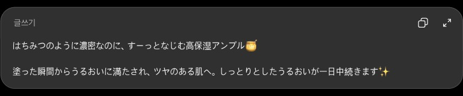
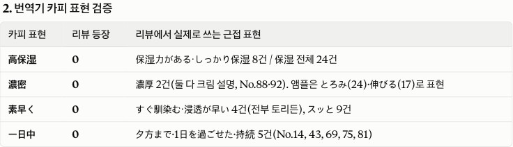
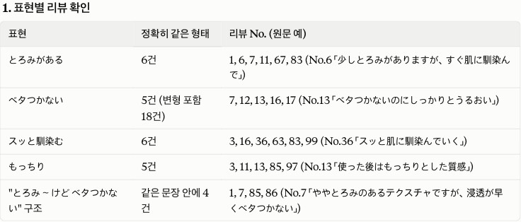
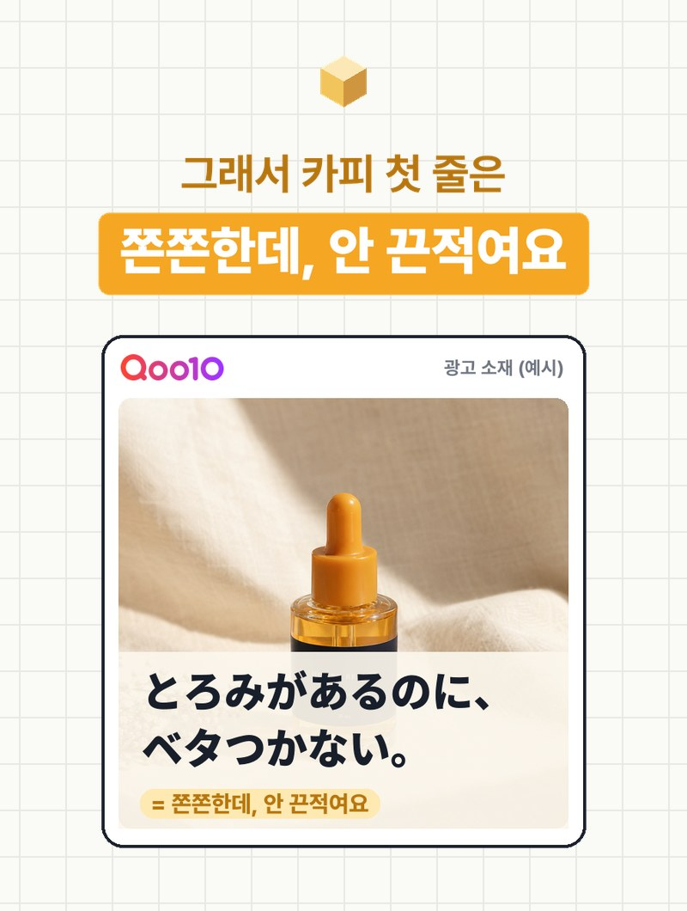
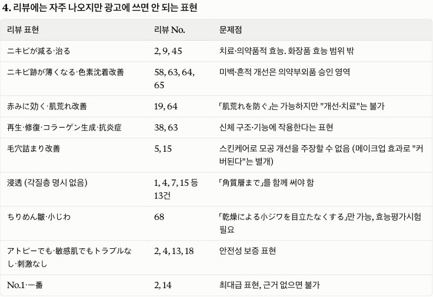

해외 카피, GPT로
돌리고 끝내지 마세요
GPT로 돌린 일본 카피, 문법은 맞아도 일본인 듣기엔 어색할 수 있어요. 일본어를 한 글자도 몰라도, 일본 소비자가 실제로 쓰는 말은 찾을 수 있어요. 큐텐 재팬 리뷰를 모아 AI로 표현을 세고, 그 말로 카피를 쓰고, 올리기 전에 검수까지 해 봤어요.
01그냥 GPT로 돌리면 생기는 오류
ChatGPT에 "이 한국어 광고 카피를 큐텐 재팬에 올릴 자연스러운 일본어 광고 카피로 써 줘"라고 시켰어요. 문법은 자연스러워요. 그런데 단어를 실제 리뷰 108개와 하나씩 대조해 보면 이래요.

숫자는 리뷰 108개 중 그 말이 나온 리뷰 수예요.
濃密 · 高保湿 · 一日中은 광고에서 자주 보는 말이지만, 실제 소비자는 한 번도 쓰지 않았어요. 한국어로 치면 "농밀한 텍스처가 신속히 흡수" 같은 번역투예요.
일본 리뷰에서 「とろみ(쫀쫀한 제형)」 뒤에 거의 항상 붙는 「ベタつかない(안 끈적여요)」가 GPT 카피엔 없었어요.
GPT도 なじむ · うるおい · しっとり처럼 리뷰에 많이 나오는 말은 잘 골랐어요. 문제는 GPT가 아니라 근거 없이 쓴다는 거예요. 같은 AI라도 리뷰를 근거로 같이 주면 결과가 달라져요.
02리뷰 싹 모아 오는 법
- 비슷한 제품 3~5개 고르기내 제품과 제형 · 가격대가 비슷하고 리뷰가 많은 현지 인기 제품이요. 이번 편은 큐텐 재팬에서 '아ンプル'로 검색해 한국 보습 앰플·세럼 4개(토리든 · 아누아 · 메디큐브 · 믹순)를 골랐어요.
- 리뷰 탭에서 정렬 두 번'인기순'으로 1~2쪽(칭찬하는 말), '평점 낮은 순'으로 1쪽(불만 · 걱정하는 말). 제품당 30개 안팎이면 충분해요.
- 본문만 시트에 붙이기리뷰 시트 양식(CSV)에 리뷰 본문만 붙여요. 아이디 · 닉네임은 넣지 않아요. 무상 샘플 리뷰는 표시해 두면 나중에 걸러 볼 수 있어요.
- 빠르게 하려면AI 브라우저나 브라우저 확장에 "이 페이지 리뷰를 본문 · 별점 · 날짜만 표로 정리해 줘"라고 시키면 복사가 빨라져요. 다만 사람이 보는 속도로, 필요한 만큼만 모으세요(아래 주의 참고).
이번 편은 119개를 모아 일본어가 아닌 리뷰를 빼고 108개를 썼어요.
03바로 쓰는 프롬프트
리뷰 시트(CSV)를 첨부하고 순서대로 붙여 넣어요. 이번 편은 Claude로 했고, ChatGPT · Gemini에서도 같은 흐름으로 쓸 수 있어요.
첨부한 CSV는 [나라] [쇼핑몰]에서 [내 제품과 비슷한 제품] [개수]개의 리뷰 [N]개를 모은 거예요. 1. 소비자가 제형·사용감·효과를 말할 때 자주 쓰는 표현을 뽑아서 표로 정리해 줘. (표현 · 한국어 뜻 · 나온 리뷰 수 · 예시 리뷰 No.) 2. 아래 카피에 나온 표현이 리뷰에 몇 번 나오는지 세어 줘. 3. 리뷰 수는 직접 세고, 표기 변형은 묶어서 세 줘. 칭찬이 아니라 불만으로 쓰인 경우는 따로 알려 줘. 지금 카피: [GPT나 번역기로 만든 카피]
이제 위 표에 있는 표현만 써서, [쇼핑몰]용 한 줄 카피를 3개 써 줘. 제품: [제품 이름] ([특징 2~3개]) 조건: 표에 없는 말은 쓰지 말고, 카피마다 어떤 표현을 썼는지 리뷰 수와 함께 적어 줘. 표현만으로 전달이 안 되는 특징이 있으면 억지로 넣지 말고 따로 알려 줘.
[번호]번으로 갈게요. 올리기 전에 검수해 줘. 1. 카피의 표현마다 리뷰에 실제로 나왔는지 (리뷰 No.와 원문 일부) 2. 한국어로 다시 옮기면 무슨 뜻인지 3. [나라]의 화장품 광고 규제(일본이면 약기법)상 쓰면 안 되는 표현이 있는지 4. 그리고 리뷰엔 자주 나오지만 광고에는 쓰면 안 되는 표현도 따로 알려 줘.
💡 ①에서 AI가 센 숫자는 가끔 틀려요. 이번에도 「とろみ」를 Claude는 24건, 직접 센 결과는 27건이었어요. 영상·보고서에 쓸 숫자는 시트에서 한 번 더 세어 보세요.
04이번 편 결과


「とろみ(쫀쫀한 제형)」를 쓴 리뷰 27개 중 15개가 바로 뒤에 「ベタつかない(안 끈적여요)」나 「なじむ(스며들어요)」를 붙였어요. 일본 소비자는 쫀쫀하다고 들으면 '끈적이겠네'를 먼저 걱정한다는 뜻이에요. 화장 전에 쓰거나 파운데이션에 섞어 쓴다는 말도 20개나 나왔어요.
とろみがあるのに、ベタつかない。 (쫀쫀한데, 안 끈적여요.) 쓴 표현은 모두 리뷰에 실제로 나온 말이에요.

사진의 '허니 뷰티'는 가상 브랜드 예시예요.
05검수 표 · 광고에 못 쓰는 말
리뷰에 많이 나와도 광고에 그대로 옮기면 안 되는 말이 있어요. 일본 화장품 광고는 정해진 효능 범위(56개 항목) 밖의 효과를 말할 수 없어요.

ニキビが減る(여드름이 줄었다) · ニキビ跡が薄くなる(여드름 자국이 옅어졌다) · 肌荒れ改善(피부 트러블 개선) · 再生・修復(재생 · 회복) · 毛穴詰まり改善(모공 막힘 개선) · No.1 · 一番(근거 없는 최고 표현)
潤う → 肌にうるおいを与える · 乾燥 → 肌の乾燥を防ぐ · ツヤ → 肌にツヤを与える · ハリ → 肌にはりを与える. 사용감(とろみ · ベタつかない · なじむ)은 사실이라면 쓸 수 있어요.
「角質層まで」(각질층까지)를 같이 적어야 해요. 「肌の奥深く」(피부 깊숙이)는 쓸 수 없어요.
06아마존도 마찬가지예요
아마존 재팬이면 그대로, 미국 아마존이면 영어 리뷰로 같은 흐름을 써요. 프롬프트의 [나라] · [쇼핑몰]만 바꾸면 돼요.
검수 ③의 규제 칸을 그 나라 기준으로 바꿔요. 미국은 화장품이 '질병 치료 · 피부 구조 변화'를 주장하면 의약품으로 봐요. 예를 들어 "cures acne"는 쓸 수 없어요. 리뷰에서 자주 나오는 "not sticky" · "absorbs fast" 같은 사용감 표현부터 찾아보세요.
07써 보기 전에 꼭
- 사이트 약관을 먼저 확인하세요. 아마존은 이용 약관에서 로봇 · 데이터 마이닝 같은 자동 수집을 허용하지 않아요. 프로그램으로 대량 수집하지 말고, 사람이 보는 속도로 필요한 만큼만 모으세요.
- 개인정보는 모으지 마세요. 아이디 · 닉네임 · 리뷰어 사진은 시트에 넣지 않아요.
- 리뷰 문장을 광고에 그대로 인용하지 마세요. 표현(단어)을 참고하는 데만 쓰세요.
- 무상 샘플 리뷰가 많으면 칭찬 쪽으로 치우쳐요. 이번 편도 108개 중 32개가 샘플 리뷰였어요.
- 약기법 같은 광고 규제 판단은 AI 검수만 믿지 말고, 게재 전에 현지 담당자나 대행사의 확인을 받으세요.
08출처
- 큐텐 재팬 공개 리뷰 (2026-10-18 확인): トリデン ダイブインセラム · アヌア PDRNヒアルロン酸カプセル100セラム · メディキューブ PDRNピンクペプチドアンプル · ミクスン 大豆エッセンス
- 오사카부 — 화장품의 효능 범위(56항목) · 근거: 후생노동성 통지 薬食発0721第1号(2011)
- Amazon Conditions of Use
대행사에서 AI 교육하는 현직 마케터가 직접 써 보고 정리해요.
인스타에서 팔로우